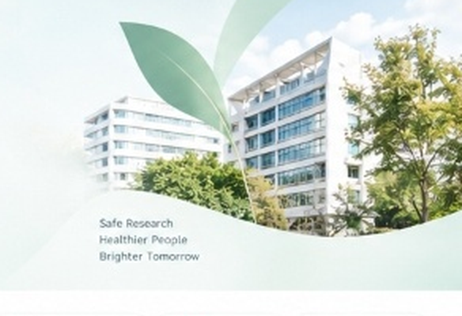

สำนักงานคณะกรรมการจริยธรรมการวิจัยในมนุษย์
คณะแพทยศาสตร์วชิรพยาบาล มหาวิทยาลัยนวมินทราธิราช

ถาม-ตอบข้อมูลจริยธรรมการวิจัยในมนุษย์ ตลอด 24 ชั่วโมง
ตรวจสอบความครบถ้วนของเอกสารก่อนยื่นพิจารณา
ติดตามสถานะโครงการวิจัย ภาพรวม และสถิติเอกสาร
คู่มือและแนวทางสำหรับนักวิจัย (ภาษาไทย / English)
ขั้นตอนและวิธีดำเนินการมาตรฐานของคณะกรรมการ IRB
หลักสูตรรับรองและกิจกรรมที่เกี่ยวข้อง (GCP / HSP)
อำนวยความสะดวกให้นักวิจัยตั้งแต่การประเมินประเภทการยื่น ตรวจสอบรอบเดดไลน์ ไปจนถึงการดาวน์โหลดชุดแบบฟอร์มที่ตรงตามประเภทงานวิจัย
คลิกเลือกลักษณะงานวิจัยของท่านด้านล่าง เพื่อดูประเภทการพิจารณา ระยะเวลา และชุดแบบฟอร์มที่ต้องใช้ทันที
สำหรับโครงการประเภท Expedited และ Exemption สามารถยื่นได้ตลอดทุกวันทำการ (ไม่ต้องรอรอบประชุม)
วันที่ 15 ของทุกเดือน
ตรวจความสมบูรณ์และจัดส่งกรรมการวันอังคาร สัปดาห์ที่ 4
ประชุมพิจารณาโครงการในที่ประชุมใหญ่ภายใน 7-10 วันทำการ
แจ้งผลทางอีเมลและดาวน์โหลดเอกสาร| รอบการประชุม | วันปิดรับเอกสาร (Cut-off) | วันประชุมคณะกรรมการ | กำหนดแจ้งผลพิจารณา | สถานะรอบ |
|---|---|---|---|---|
| ครั้งที่ 11/2567 (พ.ย. 67) | 15 พฤศจิกายน 2567 | 26 พฤศจิกายน 2567 | ภายใน 6 ธันวาคม 2567 | เปิดรับเอกสาร |
| ครั้งที่ 12/2567 (ธ.ค. 67) | 13 ธันวาคม 2567 | 24 ธันวาคม 2567 | ภายใน 7 มกราคม 2568 | เร็วๆ นี้ |
| ครั้งที่ 1/2568 (ม.ค. 68) | 15 มกราคม 2568 | 28 มกราคม 2568 | ภายใน 7 กุมภาพันธ์ 2568 | เร็วๆ นี้ |
เลือกประเภทงานวิจัยของท่านเพื่อดาวน์โหลดชุดเอกสารและแบบฟอร์มที่เกี่ยวข้องได้อย่างครบถ้วน
แบบฟอร์มหลักระบุรายละเอียดโครงการ หัวหน้าโครงการ และวัตถุประสงค์การวิจัย
สำหรับงานวิจัยที่ใช้ข้อมูลเวชระเบียนย้อนหลัง โดยไม่สามารถติดต่อขอความยินยอมจากผู้ป่วยได้
แบบฟอร์มบันทึกตัวแปรที่จะเก็บจากเวชระเบียน (ต้องไม่มีชื่อ-สกุล หรือ HN ที่ระบุตัวตน)
แบบฟอร์มหลักสำหรับการยื่นเสนอโครงการประเภทแบบสอบถามและการสัมภาษณ์
เอกสารชี้แจงวัตถุประสงค์ ประโยชน์ สิทธิของผู้ตอบ และการไม่ระบุตัวตน (Anonymous)
แบบสอบถามทุกข้อที่จะใช้กับอาสาสมัคร พร้อมระบุเวอร์ชันและวันที่กำกับ
แบบเสนอโครงการวิจัยฉบับเต็มสำหรับงานวิจัยที่มียา วัคซีน อุปกรณ์การแพทย์ หรือหัตถการใหม่
เทมเพลตมาตรฐานตามเกณฑ์ GCP ครอบคลุมความเสี่ยง ผลข้างเคียง และการดูแลรักษาพยาบาล
เอกสารกำกับยา/เครื่องมือแพทย์ ข้อมูลความปลอดภัย และแนวทางรายงานเหตุการณ์ไม่พึงประสงค์ (SAE)
สำหรับงานวิจัยที่เก็บ เลือด ชิ้นเนื้อ สารคัดหลั่ง หรือสิ่งส่งตรวจทางพยาธิวิทยา
กรณีมีการส่งต่อตัวอย่างชีวภาพออกนอกคณะแพทยศาสตร์วชิรพยาบาล หรือส่งตรวจต่างประเทศ
เอกสารขอความยินยอมเพื่อเก็บรักษาตัวอย่างชีวภาพไว้ใช้งานวิจัยในอนาคต
เช็คสถานะการพิจารณา ดูเอกสาร และติดตามผลได้ที่นี่
ภาพลักษณ์เว็บไซต์ที่ทันสมัย เป็นมิตร ใช้งานง่าย สื่อถึงความน่าเชื่อถือ ความโปร่งใส และการดูแลผู้วิจัยอย่างใกล้ชิด ในบรรยากาศที่อบอุ่นและเป็นมืออาชีพ
กระบวนการพิจารณาจริยธรรมตามมาตรฐานสากล เป็นธรรม ตรวจสอบได้ทุกขั้นตอน
มีระบบให้คำปรึกษา คำแนะนำ และเครื่องมือช่วยตรวจสอบเอกสารเพื่อความราบรื่น
ร่วมสนับสนุนผลงานวิจัยทางการแพทย์และวิทยาศาสตร์สุขภาพที่มีคุณภาพและมาตรฐาน
คุ้มครองสิทธิ สวัสดิภาพ และความปลอดภัยของผู้เข้าร่วมการวิจัยเป็นหัวใจสำคัญ
รับฟังทุกเสียงเพื่อพัฒนาการบริการให้ดียิ่งขึ้น
ร่วมประเมินและให้ข้อเสนอแนะในการปฏิบัติงานของสำนักงาน
นักวิจัยที่ประสงค์ขอรับรองจริยธรรมการวิจัย สามารถเข้ารับการอบรมและรับใบประกาศนียบัตร (Certificate) จากสถาบันที่ได้มาตรฐานดังต่อไปนี้:
ระบบอบรมจริยธรรมการวิจัยในมนุษย์ สำนักงานการวิจัยแห่งชาติ (วช.) เรียนฟรีพร้อมรับใบประกาศนียบัตร
หลักสูตรการปกป้องผู้เข้าร่วมการวิจัยในมนุษย์สำหรับนักวิจัย โดยมหาวิทยาลัยมหิดล
การอบรมแนวปฏิบัติทางคลินิกที่ดี (Good Clinical Practice) และการคุ้มครองอาสาสมัครวิจัย
แนวปฏิบัติขั้นตอนการดำเนินงานมาตรฐานของคณะกรรมการพิจารณาจริยธรรมการวิจัย